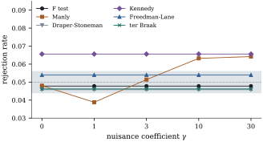

23.5 Freedman–Lane and related schemes
With a continuous nuisance regressor in Eq. 23.4.2, no permutation of the responses leaves the null distribution unchanged. Several schemes permute something else, or permute the responses and hope. None is exact in general, but their differences can be understood with the projection algebra of Chapter 6.
23.5.1. Five schemes
Keep the notation of Eq. 23.4.2:
Since
For a permutation matrix
(a) Raw permutation (Manly 1997):
(b) Permuting the regressors of interest (Draper and Stoneman 1966): the
(c) Kennedy’s scheme (Kennedy 1995): regress
(d) Freedman–Lane (Freedman and Lane 1983): form
(e) ter Braak’s scheme (ter Braak 1992): form
23.5.2. What can be proved
In the setting above:
(a)
(b) Under
(c) Under
(d) Suppose the errors are independent draws from one law with mean zero and variance
Proof.
(a)
(b) Under
(c)
(d) Put
Part (d) compares Freedman–Lane with an
oracle that permutes the true errors.
The oracle is exact:
Part (b) is the practical point: four of the schemes
see the data only after
For every permutation
Proof. The two statistics have the
same numerator. Write
The discrepancy
23.5.3. Stack loss again, and a simulation
In the full stack loss regression, test whether acid
concentration matters once air flow and water
temperature are in the model. The
import numpy as np
import statsmodels.api as sm
from scipy import stats
data = sm.datasets.stackloss.load_pandas().data
def proj(Z):
"""Orthogonal projection onto C(Z), from a QR factorization."""
Q, _ = np.linalg.qr(Z)
return Q @ Q.T
def perm_rows(v, B, rng):
"""B random permutations of the vector v, one per row."""
return v[np.argsort(rng.random((B, len(v))), axis=1)]
def perm_pvalues(y, x, Z, B, rng):
"""p-values for H0: beta = 0 in E(y) = Z gamma + x beta, by six methods."""
n, p = len(y), Z.shape[1] + 1
MZ = proj(Z)
xt = x - MZ @ x # x residualized on Z
yt = y - MZ @ y # reduced-model residuals
e_full = yt - xt * (xt @ yt) / (xt @ xt) # full-model residuals (FWL)
def F(Y):
"""F statistic for beta = 0, for each row of Y (model matrix [Z, x] fixed)."""
num = (Y @ xt) ** 2 / (xt @ xt)
rss_Z = np.sum(Y ** 2, axis=-1) - np.sum((Y @ MZ) * Y, axis=-1)
return num / ((rss_Z - num) / (n - p))
F_obs = F(y)
out = {"F test": stats.f.sf(F_obs, 1, n - p)}
def pval(F_star, F0=F_obs):
return (1 + np.sum(F_star >= F0)) / (len(F_star) + 1)
out["Manly"] = pval(F(perm_rows(y, B, rng))) # permute y
Xs = perm_rows(x, B, rng) # permute x (Draper-Stoneman)
xts = Xs - Xs @ MZ
num = (xts @ y) ** 2 / np.sum(xts ** 2, axis=1)
out["Draper-Stoneman"] = pval(num / ((yt @ yt - num) / (n - p)))
Yk = perm_rows(yt, B, rng) # Kennedy: no Z in the refit
num = (Yk @ xt) ** 2 / (xt @ xt)
out["Kennedy"] = pval(num / ((np.sum(Yk ** 2, axis=1) - num) / (n - p)))
out["Freedman-Lane"] = pval(F(perm_rows(yt, B, rng))) # permute reduced residuals
out["ter Braak"] = pval(F(perm_rows(e_full, B, rng))) # permute full residuals
return out, F_obs
rng = np.random.default_rng(2307)
y = data["STACKLOSS"].to_numpy()
x = data["ACIDCONC"].to_numpy()
Z = np.column_stack([np.ones(len(y)), data[["AIRFLOW", "WATERTEMP"]]])
pvals, F_obs = perm_pvalues(y, x, Z, B=19_999, rng=rng)
print(f"F = {F_obs:.3f}")
for m, pv in pvals.items():
print(f"{m:16s} p = {pv:.4f}")Real data with a p-value near

The same random numbers are used for every
def size_study(gamma, reps, B, seed, n=12, alpha=0.05):
"""Rejection rates at level alpha when beta = 0 and the nuisance coefficient is gamma."""
rng = np.random.default_rng(seed)
z = np.linspace(-1, 1, n)
x = 0.8 * z + 0.6 * np.random.default_rng(1).normal(size=n) # fixed, correlated with z
x[0] = 6.0 # one high-leverage value of x
Z = np.column_stack([np.ones(n), z])
rejections = {}
for _ in range(reps):
y = 1.0 + gamma * z + rng.normal(size=n) # the null hypothesis beta = 0 holds
for m, pv in perm_pvalues(y, x, Z, B, rng)[0].items():
rejections[m] = rejections.get(m, 0) + (pv <= alpha)
return {m: r / reps for m, r in rejections.items()}
for gamma in (0.0, 30.0):
print(gamma, size_study(gamma, reps=300, B=99, seed=2308))As Anderson and Legendre (1999) concluded from a much larger simulation, Freedman–Lane is the sensible default: exact whenever an exact test exists, blind to the nuisance coefficients, and close to the oracle in large samples. ter Braak’s scheme behaves similarly, and since its reference distribution does not need the null hypothesis, it suits the inversion of tests into intervals. Winkler and coauthors (2014) review the schemes for the general linear model.
23.5.4. Exercises
A. Check your understanding
Show that when
Solution. With
In ter Braak’s scheme, what is the permuted statistic
for
B. Practice
Let
C. Going deeper
Suppose the errors are independent with variances
that depend on